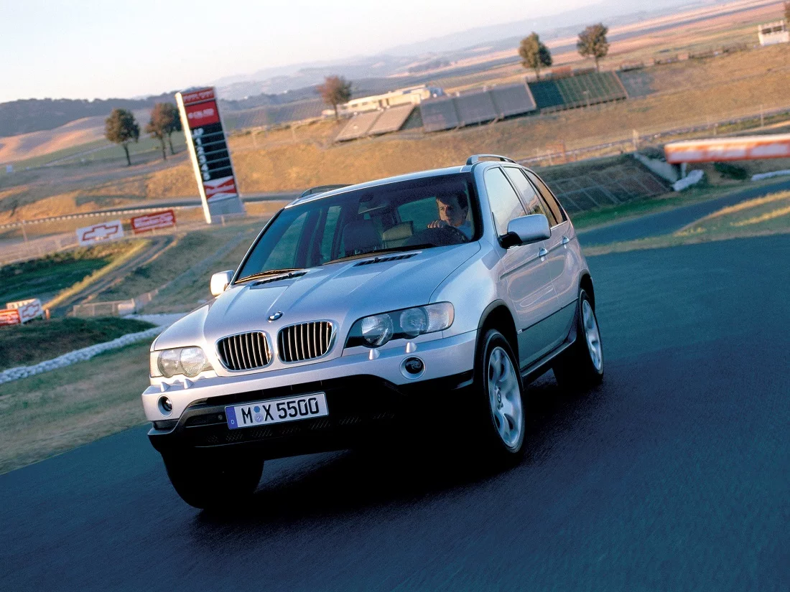
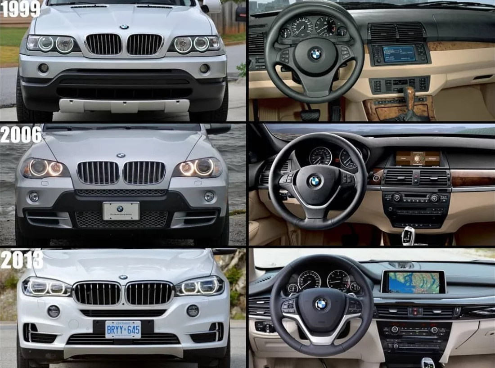
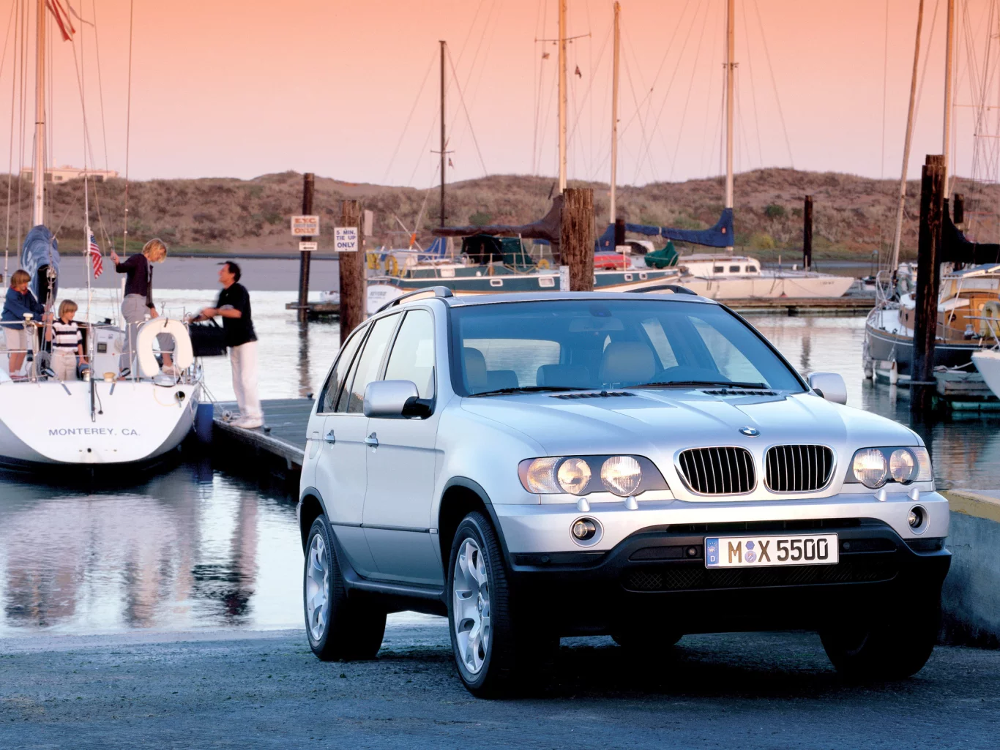

BMW X5 E70 — второе поколение люксового кроссовера X5, которое пришло на смену E53 в ноябре 2006 года. E70 оснащается большим набором высокотехнологичных новинок, включая систему BMW iDrive (серийно), а также впервые в истории BMW — третьим рядом сидений (опция), увеличивающим вместимость до 7 человек. Современная система безопасности включает в себя уникальную конструкцию задней секции, обеспечивающую безопасность пассажиров третьего ряда в случае удара сзади.
Выдающаяся по своим характеристикам спорт ивная версия X5 M поступила в продажу осенью 2009 года. Этот автомобиль, стоящий особняком в своем модельном ряду, получил ту же силовую установку, что и X6 M — V8 турбо-двигатель с максимальной мощностью 555 л.с. и крутящим моментом 680 Нм. Кроме того, для наилучшей управляемости автомобиль оснащён системой M Dynamic Performance Control. Помимо всего, стоит отметить, что BMW X5 — не просто роскошный и богато оснащённый автомобиль, но ещё и практичный. Объём багажного отделения в модели с двумя рядами сидений составляет внушительные 620 литров. При сложенном заднем ряду в общей сложности высвобождается 1750 литров пространства.
Люксовая принадлежность X5 еще с появлением первого поколения в 1999 году подтверждалась высоким уровнем оснащения, который стал ещё выше с приходом второй генерации модели, а по качеству и стоимости отделки поднялся до уровня BMW 7 Series. Начальная комплектация предполагает наличие следующих функций: злектропривод стекол и боковых зеркал, обогрев боковых зеркал и форсунок омывателя, регулируемая колонка, запуск с кнопки, мультируль, тканевая обивка салона, климат-контроль, цветной многофункциональный дисплей, CD-плеер, стандартный набор парктроников спереди и сзади. В более дорогих комплектациях доступны биксеноновые фары, датчики света и дождя, обогрев рулевого колеса, обогрев задних сидений, кожаный салон, панорамная крыша, CD- или DVD-чейнджер, развлекательная система для пассажиров, коммуникационная система Bluetooth и т.д. Удачно решена и проблема размещения мелких предметов — всевозможные карманы, полочки, ящички, подстаканники идеально рассредоточены по всему салону. В 2011 году был проведен косметический рестайлинг X5. Были видоизменены передний бампер, воздухозаборники.
Для X5 характерна широкая линейка моторов. Для моделей до рестайлинга 2011 года российскому покупателю предлагались два варианта бензиновых силовых агрегата (модификации 30i, 272 л.с. и 48i, 355 л.с.) и два дизельных (30d, 231 л.с. и 35d, 286 л.с.). После рестайлинга атмосферные бензиновые двигатели были заменены на турбированные (35i и 50i), мощностью 306 и 407 л.с. соответственно. Кроме того, была поднята мощность базовой дизельной модификации до 245 л.с., а взамен версии 30d добавились две новые — 40d (306 л.с.) и M50d (381 л.с.). Последняя обладает выдающейся динамикой — разгон до 100 км/ч за 5,4 секунды. Это, конечно, меньше, чем у X5 50i, но всего на 0,1 секунды, что, конечно, не может не впечатлять. Да и крутящий момент у этой модификации трехлитрового турбодизеля с непосредственным впрыском вызывает уважение — 740 Нм в широком диапазоне оборотов (2000-3000 об/мин).
Отзывы о БМВ Х5 2011
Добрый день! В общем хотел написать свою историю знакомства с БМВ Х5. В семье есть Тойота Прадо, машина отличная, очень сильно к ней прикипели и менять или продавать в ближайшие годы не планируем, но учитывая расширение семьи и то, что дети растут и их необходимо возить по разным кружкам, а так же, что летом больше времени стали жить на даче, а на работу и с работы на такси ездить не очень удобно, встал вопрос приобретения второй машины. Стали рассматривать такие б/у варианты как рав 4, ниссан кашкай, кия спортейдж, смотрел трехлетки, так как новые машины в хорошей комплектации я считаю не стоят тех денег, за которые они выставлены в салонах. Понравился кия соул в пред максимальной комплектации, но в душе было двоякое чувство, да путь простят меня почитатели этих марок, но все перечисленные машины просто сделаны для проезда с точки А, в точку Б и в них не удастся получить какого-то реального удовольствия от езды, а так хочется иногда выехать на трассу проехаться с ветерком. Еще с детства, когда савок перестал существовать, я в первый раз увидел во дворе БМВ и мне эта марка так запала в душу, что из всех машин для меня она была всегда самой лучшей и всегда хотел её приобрести, но цены на момент покупки очередного автомобиля на БМВ всегда были заметно выше японцев, а так же пугало стоимость ремонта, к машинам я всегда довольно щепетильно отношусь, ставлю з/ч что касается по капотного пространства только оригиналы, масло только оригинал, расходники либо оригиналы, либо производителей которые поставляют запчасти на конвейер, т.е. тот же оригинал, только не в упаковке автопроизводителя. Читать полностью:
Отзывы о БМВ Х5 2013
Добрый день Друзья писать особо не люблю,НО не не писать про этого дивного коня и пройти мимо я не смог после владением авто Z4 (прошло 4 года с момента его покупки ), Отзыв о BMW Z4 зимой как показала практика ездить проблематично , поэтому подыскивал почти год данный аппарат читал ,смотрел обзоры знатоков и просто владельцев BMW X5 бензиновые двигатели какие ставят на данный авто оставляют желать лучшего поэтому только дизель и если брать коня то решил со всеми плюшками , есть практически всё кроме движения по полосам и боковых камер в переднем бампере ценик начинался от 1,7 по низу рынка и до 2,2 по верху Читать полностью:
Отзывы о БМВ Х5 2001
Всем привет! Не буду делить на криворуких, пряморуких, все зависит от человека и само воспитания!!! МАШИНУ!!! Купил в 2011г до этого был ренж ровер 2002г да хлебнул но потом разобрался, что куда и почем, и он стал другом!!! С БМВ разобрался еще быстрей перепелил всю подвеску, убрал домик все родные саленты и шаровые ,от более тяжолых авто и УАЗ есть и тайота подвеска солянка на управлении не сказалось не капли.Следующий ремонт и переборка подвески через 9 лет !!! Машина на пневма ДВС 4.4 Читать полностью:
